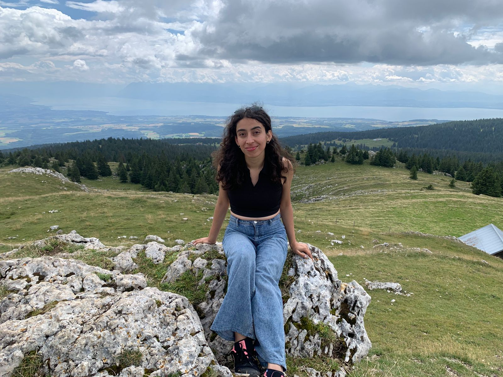

Hi, I'm Roshnik Rahat 👋
Ph.D. Student at Dartmouth College

I am a first-year Ph.D. student in Computer Science at Dartmouth College.
Previously, I completed my B.S. in Computer Science at LUMS ('25) and was a
2025 Summer Intern at EPFL (DEDIS Lab).
🔬 Projects
🧠 Digital Democracy @ DEDIS — EPFL Summer Internship (2025)
Worked under Dr. Bryan Ford at the DEDIS Lab exploring decentralized,
privacy-preserving digital governance systems.
Focused on scalable, trust-minimized participation models that leverage
cryptographic primitives for transparent and verifiable digital democracy.
📱 Understanding Low-Literacy Interactions with Financial Apps
Supervisors: Dr. Yasir Zaki, Dr. Fareed Zaffar (LUMS)
Led a mixed-methods study (surveys, interviews, and app data from 100 participants)
to analyze how low-literate populations interact with financial apps.
Findings showed poor consent awareness and excessive permission requests leading to data leaks.
Proposed an LLM + RAG-based UI system that:
- Checks GDPR compliance automatically
- Translates and summarizes privacy policies in the user's native language
-> Bridging gaps in informed consent and digital privacy for marginalized users.
🎭 Bias in Multimodal Models Targeting Adolescent Girls
Supervisor: Dr. Ihsan A. Qazi (LUMS)
Investigating how multimodal AI systems (e.g., text-to-image LLMs) portray adolescent girls
and whether these representations reinforce harmful stereotypes.
Developed a benchmark to evaluate age-specific gender bias,
combining social science-informed prompt design with bias and fairness metrics.
This project highlights the societal risks of AI bias on youth mental health and representation.